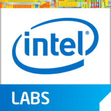

Senior Applied Research Scientist
Oct 2023 – PresentFlawless AI · Los Angeles, CA
- Developed kinematic-aware human motion generation models for real-time applications.
- Improved inference speed by 30% using lightweight neural network architectures.
Flawless AI · Los Angeles, CA

Meta Reality Labs · Redmond, WA

Facebook Reality Labs Research · Sausalito, CA

Microsoft Research · Redmond, WA

Intel Labs · Santa Clara, CA

University of Trento · Trento, Italy